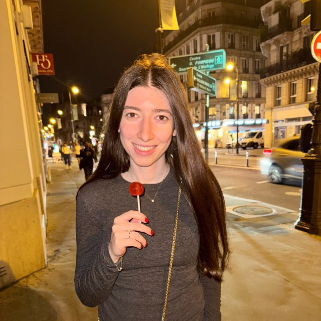

Путешествие по миру 🌍
Space ↑ — прыжок, второй раз в воздухе — двойной прыжок
↓ — присесть под летящими, в воздухе — быстрое падение
🍪 орешки со сгущёнкой · ♥ жизни · 🛡 щит · у Яны 3 жизни
На телефоне: тап сверху — прыжок, тап снизу — присесть · P — пауза · M — звук
Яна прошла все 4 городаDerbent → Moscow → Tel Aviv → Amsterdam